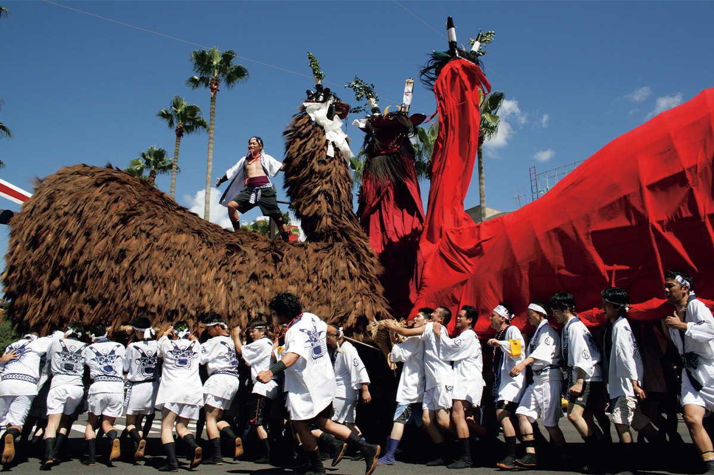
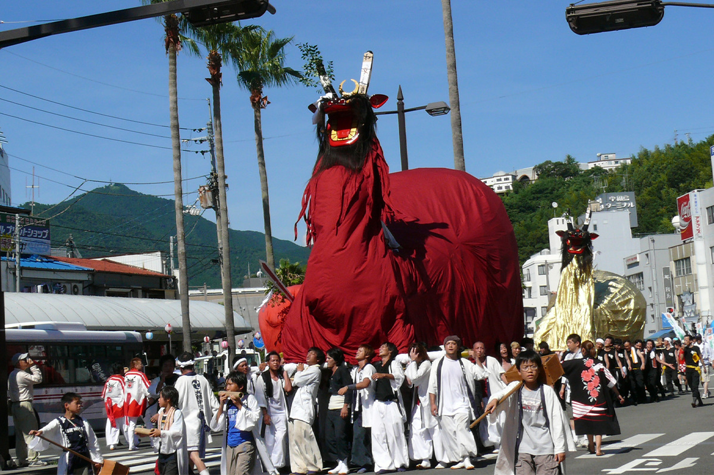
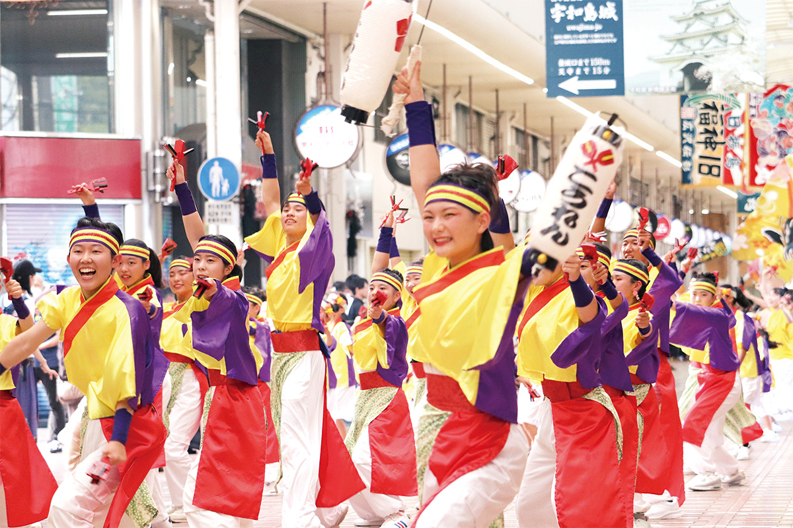
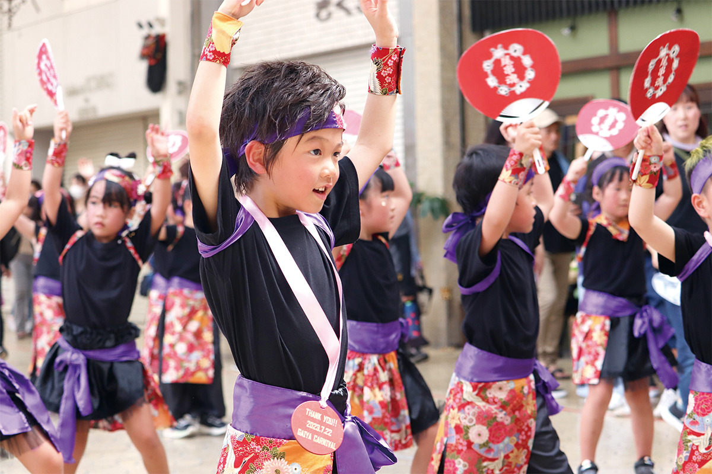

Префектура Эхимэ · Увадзима · праздники
Усиони в Увадзиме: три дня, когда чудища выходят на улицы

Три дня подряд по улицам Увадзимы носят усиони, чудищ с телом быка и головой демона. Они разгоняют беды, а в последний вечер мужчины бросаются в реку за священным талисманом.
Праздник
Чудища против бед
На юге Эхимэ, в районе Нанъё, на праздниках издавна появлялся усиони с устрашающей мордой: его проносили по кварталам, чтобы отвести беды. Обычай жив до сих пор, и главный день здесь делят с большим праздником Варэй в честь божества святилища Варэй.
В город выходят больше десяти усиони. Тело каждой фигуры собирают из бамбука и обтягивают пальмовым волокном сюро или красной тканью, а длина доходит до 6–7 метров.

Сильнее всего впечатляет движение: чудище резко качает длинной шеей вверх и вниз, влево и вправо, и кажется, что оно вот-вот вырвется из рук.
Финал
Забег через реку
В последний день праздника наступает кульминация. Мужчины переходят реку Сука перед святилищем Варэй, и это не прогулка: в воде они борются за гохэй, бумажный талисман, привязанный к священному бамбуку. Обряд держится на старых верованиях, но выглядит как современное зрелище, поэтому местные называют праздник старым и новым одновременно.
События
Праздник на весь город
Усиони здесь не единственные герои. На конкурсе танца Увадзима-одори горожане идут по улицам под песню «Увадзима-ондо».

На карнавале Гайя танцуют в ярких костюмах с красными веерами, а вечером над морем вспыхивает фейерверк.

Фестиваль Увадзима усиони
- Место
- префектура Эхимэ, город Увадзима, улица Кисайя и другие площадки
- Даты
- 22–24 июля 2026 года
- Как добраться
- 10 минут пешком от станции Увадзима линии Ёсан; около 5 минут на машине от съезда Увадзима-Асахи